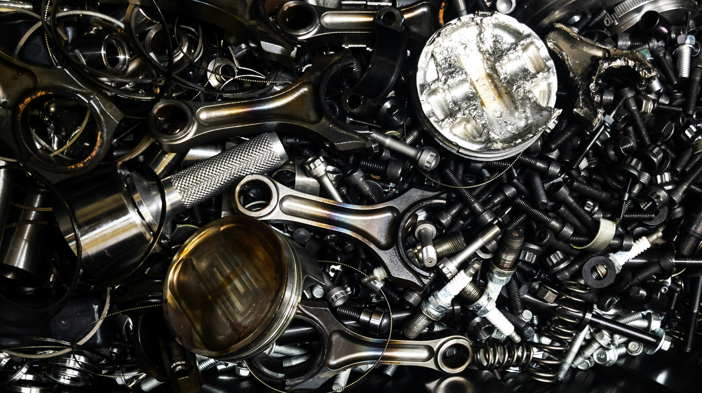

Acerca de MetaScrapMX
Descripción de la Empresa
MetaScrapMX proporciona servicios de recolección de chatarra para maquiladoras, plantas industriales y negocios que necesitan un socio confiable para mantener sus operaciones limpias, organizadas y cumpliendo con prácticas responsables de reciclaje. Nuestro trabajo se enfoca en la recuperación de materiales, apoyo operacional y comunicación simple con cada cliente.
Manejamos la recolección de materiales ferrosos y no ferrosos, así como chatarra electrónica, con un enfoque que prioriza la puntualidad, coordinación clara, y manejo seguro. El objetivo es facilitar el proceso para el cliente mientras creamos valor a partir de los materiales que ya no se necesitan en el sitio.
Nuestra Historia
MetaScrapMX fue creada con una idea simple: la recolección de chatarra industrial debe ser confiable, transparente y adaptada al ritmo de la operación del cliente. Desde el principio, la empresa fue moldeada alrededor del servicio directo, soluciones prácticas y relaciones laborales a largo plazo con maquiladoras en Juárez y el área circundante.
Con el tiempo, ese enfoque nos ha ayudado a construir un modelo de servicio centrado en la consistencia y la confianza. Continuamos mejorando nuestros procesos para poder responder más rápido, coordinar mejores recogidas y apoyar a clientes que necesitan un socio que entienda los plazos industriales y las demandas de producción.
Horario de Operación
Nuestro horario de servicio es de lunes a viernes, de 8:00 AM a 3:00 PM. Este horario nos permite coordinar recogidas durante horas de negocio activas y mantener la comunicación alineada con supervisores de planta, equipos de logística y departamentos de compras.
Si tu operación requiere recolección programada o tiempo específico para la liberación de materiales, trabajamos para coordinar esos detalles con anticipación. El objetivo es mantener tu flujo de trabajo sin interrupciones mientras hacemos la remoción de chatarra lo más simple posible.
Cómo Apoyamos a Nuestros Clientes
Apoyamos a los clientes ofreciendo comunicación clara, tiempos de respuesta rápidos y un proceso directo desde el primer contacto hasta la recogida final. Ya sea que necesites una recolección única o apoyo continuo, mantenemos el proceso práctico y fácil de manejar.
Nuestro soporte también incluye ayuda con solicitudes de servicio, preguntas sobre programación y orientación básica sobre el tipo de material que se está recopilando. Si necesitas una cotización o quieres coordinar una recogida, puedes contactarnos directamente y te ayudaremos a avanzar al siguiente paso.